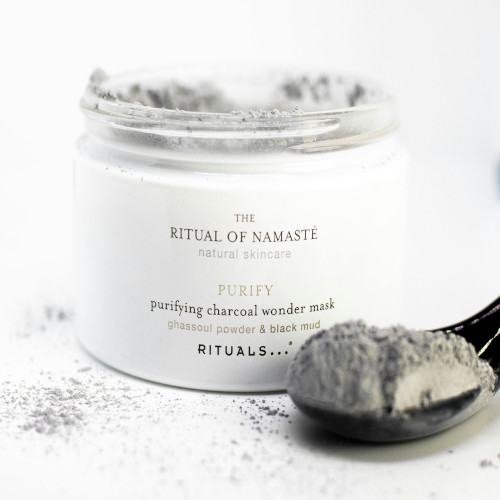

When it comes to skin care, choosing the right products makes all the difference. In recent years, natural skincare products have come to the fore, gaining a foothold on the shelves and in the hearts of consumers. But why opt for a skincare routine based on natural ingredients? natural products are formulated with ingredients derived directly from nature, such as plants, herbs, flowers, and essential oils. by avoiding synthetic ingredients and potentially harmful chemicals, such as parabens, sulphates and artificial fragrances, natural products offer a gentler and safer alternative for the skin.
